Previous slide
Next slide
Toggle fullscreen
Open presenter view
ISMS完全ガイド | ISO/IEC 27001:2022
ISMS 完全ガイド
ISO/IEC 27001:2022 — 審査員・コンサルタントのための詳解
2026年2月
ISMS完全ガイド | ISO/IEC 27001:2022
アジェンダ (1/2)
第1章
ISMSの基礎概念 — CIAトライアド・規格体系・歴史
第2章
ISO/IEC 27001:2022の構造 — HLS・箇条4〜10・Annex A
第3章
リスクマネジメント — アセスメント・SoA・レジスター
第4章
主要管理策の詳細 — 組織・人的・物理・技術（Annex A）
第5章
認証審査の実践 — Stage 1/2・不適合事例・証跡収集
ISMS完全ガイド | ISO/IEC 27001:2022
アジェンダ (2/2)
第6章
実際の導入事例 — IT企業・製造業・金融・医療
第7章
ISO/IEC 27001:2022 改訂ポイント — 新規11管理策・移行
第8章
関連規制との連携 — GDPR・個人情報保護法・SOC 2
第9章
AI・クラウド時代のISMS — ゼロトラスト・ISO 42001
第10章
まとめと今後の展望
ISMS完全ガイド | ISO/IEC 27001:2022
第1章 ISMSの基礎概念
Information Security Management System
ISMS完全ガイド | ISO/IEC 27001:2022
ISMSとは何か
ISMS（情報セキュリティマネジメントシステム）
— 組織が情報資産を体系的に管理するための仕組み
基盤規格:
ISO/IEC 27001（現行版: 2022年版）。IAF認定審査機関による第三者認証が可能
目的:
リスクベースアプローチで情報セキュリティリスクを特定・評価・対処し継続的に改善
適用範囲:
規模・業種を問わず、あらゆる組織に適用可能（スコープは組織が決定）
3つの保護対象:
紙・電子・人の頭の中にある情報資産すべて
認証の価値:
顧客・取引先への信頼性証明、入札要件、内部ガバナンス強化
ISMS完全ガイド | ISO/IEC 27001:2022
情報セキュリティの3要素（CIA トライアド）
機密性 (Confidentiality):
権限を持つ者のみが情報にアクセスできる状態を維持
完全性 (Integrity):
情報が正確・完全であり、不正な改ざんがない状態を保持
可用性 (Availability):
権限を持つ者が必要なときに情報・システムを利用できる状態を確保
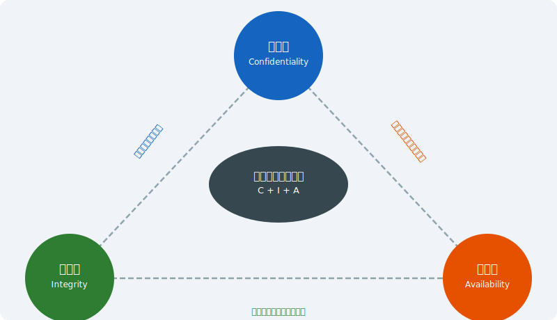
ISMS完全ガイド | ISO/IEC 27001:2022
なぜISMSが必要か — サイバー脅威の現状
サイバー攻撃の深刻化:
ランサムウェアによる業務停止・データ漏えいが急増
サプライチェーンリスク:
子会社・協力会社経由の侵害（2022〜2024年 国内主要事案）
法規制の強化:
個人情報保護法改正（2022）・重要インフラのセキュリティ強化要請
ビジネス要件:
取引先・顧客からのISMS認証要求がサプライチェール参加条件に
内部不正リスク:
退職者・委託先による不正アクセス・情報持ち出し
投資対効果:
インシデント対応コスト（平均4〜5億円/件）vs 予防的管理策コストの比較
ISMS完全ガイド | ISO/IEC 27001:2022
ISMSと関連規格の全体像
ISO/IEC 27001を中心に、目的別の拡張規格が体系化されている
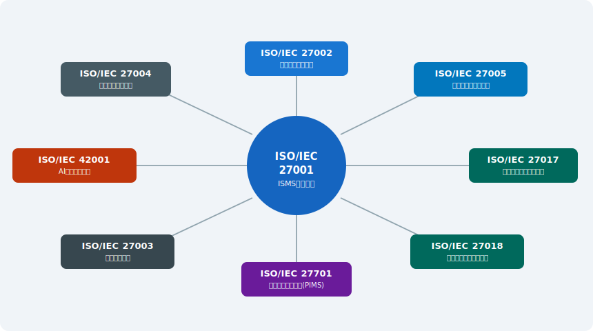
ISMS完全ガイド | ISO/IEC 27001:2022
ISMSの歴史と変遷
1995年
BS 7799（英国規格）— 情報セキュリティの実践規範として制定
2000年
ISO/IEC 17799:2000 — BS 7799 Part 1 が国際規格化
2005年
ISO/IEC 27001:2005 — 初の国際ISMS認証規格として制定（第三者認証開始）
2013年
ISO/IEC 27001:2013 — HLS導入・管理策114項目（14のドメイン）に大幅改訂
2022年
ISO/IEC 27001:2022 —
現行版
管理策93項目（4カテゴリ）・11の新規管理策追加
移行期限: 2025年10月31日
— 2013年版認証は失効（IAF MD 26）
ISMS完全ガイド | ISO/IEC 27001:2022
第2章 ISO/IEC 27001:2022の構造
HLS（高位構造）と Annex A 管理策
ISMS完全ガイド | ISO/IEC 27001:2022
ISO/IEC 27001:2022 全体構造
箇条4〜10はすべてのISOマネジメントシステム規格に共通のHLS（高位構造）
Annex Aは箇条6.1.3（リスク対応）と8.3で参照する管理策カタログ
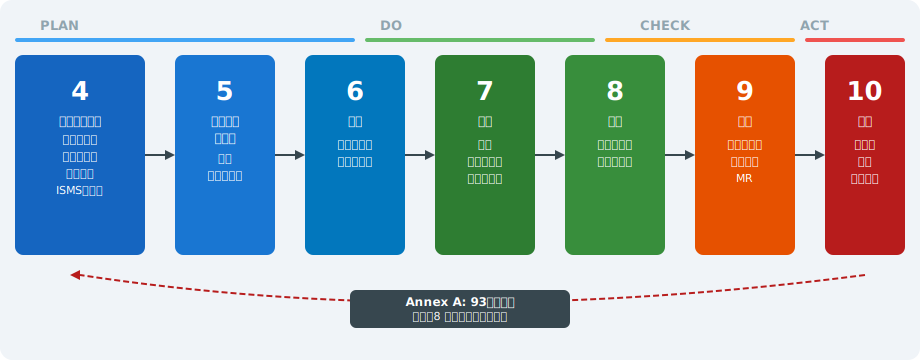
ISMS完全ガイド | ISO/IEC 27001:2022
HLS（高位構造）— ISMSに共通する骨格
HLS（High Level Structure）
— ISO 9001・14001・45001など全マネジメントシステム規格の共通構造
利点①:
複数のマネジメントシステムを統合実施できる（IMS: 統合マネジメントシステム）
利点②:
審査員・コンサルタントが他規格の知識を流用しやすい
箇条1〜3:
適用範囲・引用規格・用語の定義（ISMS固有の要求事項ではない）
箇条4〜10:
ISMS固有の要求事項（PLAN→DO→CHECK→ACT のPDCAに対応）
注意:
Annex Aは「規範的附属書」—適用宣言書(SoA)でカバーの是非を示す義務あり
ISMS完全ガイド | ISO/IEC 27001:2022
箇条4・5 — コンテキストとリーダーシップ
箇条4.1
組織及びその状況の理解 — 内部・外部の課題を特定（SWOT・PESTLE等活用）
箇条4.2
利害関係者のニーズと期待 — 顧客・規制当局・株主・従業員のセキュリティ要求
箇条4.3
ISMSの適用範囲 — 境界と適用範囲を明確に文書化（審査で頻出確認事項）
箇条5.1
リーダーシップとコミットメント — トップマネジメントの関与・資源提供
箇条5.2
情報セキュリティ方針 — 組織の方向性を示す文書（公開義務あり）
箇条5.3
役割・責任・権限の割当 — CISO・管理責任者・各部門の役割明確化
ISMS完全ガイド | ISO/IEC 27001:2022
箇条6 — 計画（リスクアセスメントと目的）
箇条6.1.1
リスク及び機会への取組み — ISMS目的達成を阻害する要因の特定
箇条6.1.2
情報セキュリティリスクアセスメント — 資産・脅威・脆弱性に基づく体系的評価
箇条6.1.3
情報セキュリティリスク対応 — Annex Aを参照した対応策の選択・SoA作成
箇条6.2
情報セキュリティ目的 — 測定可能な目標設定（SMART原則）
箇条6.3
変更の計画策定 — ISMSへの変更を計画的に実施（2022年新設）
審査のポイント:
リスクアセスメント方法論の一貫性・SoAの論理的整合性
ISMS完全ガイド | ISO/IEC 27001:2022
箇条7・8 — 支援と運用
箇条7.1
資源 — ISMS運用に必要な人・物・資金・技術の確保
箇条7.2
力量 — 情報セキュリティ業務に必要なスキル・資格の特定と教育
箇条7.3
認識 — 全従業員が方針・自分の役割・インシデント時の対応を理解
箇条7.4
コミュニケーション — セキュリティ情報の伝達手段・頻度・責任者の明確化
箇条7.5
文書化された情報 — 文書の作成・更新・管理（バージョン管理・アクセス制御）
箇条8
運用 — リスクアセスメント・対応策の実施・変更時の再評価
ISMS完全ガイド | ISO/IEC 27001:2022
箇条9・10 — パフォーマンス評価と改善
箇条9.1
監視・測定・分析・評価 — KPI設定（インシデント件数・研修完了率・パッチ適用率等）
箇条9.2
内部監査 — 全スコープを対象に年1回以上実施・独立性の確保が必須
箇条9.3
マネジメントレビュー — トップが参加し、ISMS有効性を評価・改善方針を決定
箇条10.1
継続的改善 — ISMSの有効性・適切性・充実性を継続的に向上
箇条10.2
不適合及び是正処置 — 不適合の根本原因分析・再発防止策の実施・有効性確認
審査のポイント:
MRの議事録・内部監査プログラムの計画と実績・是正処置の追跡記録
ISMS完全ガイド | ISO/IEC 27001:2022
Annex A — 93の情報セキュリティ管理策（2022年版）
第5節 組織的管理策（Organizational controls）:
37項目 — 方針・役割・リスク・サプライヤー等
第6節 人的管理策（People controls）:
8項目 — 採用・教育・テレワーク・退職後等
第7節 物理的管理策（Physical controls）:
14項目 — 入退室・設備・監視カメラ等
第8節 技術的管理策（Technological controls）:
34項目 — アクセス管理・暗号化・ログ等
「属性（Attributes）」
— 2022年版で新設。管理策タイプ・CIAへの効果・NISCFとの対応等5軸で分類
重要:
SoAで全93項目の適用/除外と理由を文書化。除外は正当な理由必須
ISMS完全ガイド | ISO/IEC 27001:2022
第3章 リスクマネジメント
ISO/IEC 27005:2022 に基づく体系的アプローチ
ISMS完全ガイド | ISO/IEC 27001:2022
リスクアセスメントのプロセス
Step 1
コンテキスト確立 — スコープ・リスク受容基準・方法論の決定
Step 2
資産の特定 — 情報資産目録（クラウドサービス・APIも含む）
Step 3
脅威・脆弱性分析 — 資産ごとのリスクシナリオ作成
Step 4
リスク評価 — 影響度×発生可能性でスコアリング
Step 5
リスク対応 — 回避・移転・低減・受容から選択
Step 6
残留リスク受容 — トップマネジメントによる承認
ISMS完全ガイド | ISO/IEC 27001:2022
資産の特定と評価
一次情報資産:
顧客データ・財務情報・知的財産・設計図・ソースコード
支援情報資産（一次資産を支えるもの）:
サーバ・ネットワーク機器・クラウドサービス・OS・従業員
資産評価の視点:
機密性・完全性・可用性それぞれの喪失時の影響度（1〜5スケール等）
クラウド時代の注意点:
SaaS・IaaS・PaaS上のデータも資産として管理対象に含める
外部委託先が持つ情報資産:
委託先での管理状況も親組織のリスク評価に反映する
資産目録の維持:
定期的な棚卸し（最低年1回）・新規システム導入時の即時登録
ISMS完全ガイド | ISO/IEC 27001:2022
脅威・脆弱性の分析
脅威の種類:
意図的（不正アクセス・ランサムウェア・内部不正）/ 偶発的（誤操作・紛失）/ 環境的（自然災害・停電）
脅威情報の入手先:
NISC・IPA・JPCERT/CC・業界ISAC・ISO/IEC 27005 Annex C
脆弱性の例（技術的）:
未パッチのOS・デフォルトパスワード・暗号化なし通信・設定ミス
脆弱性の例（管理的）:
アクセス権レビュー未実施・教育未受講・手順書の陳腐化
CVSSスコアの活用:
技術的脆弱性の深刻度定量化に活用（NVD・JVN等を参照）
脅威インテリジェンス（Annex A 5.7）:
2022年新規管理策 — 脅威情報を収集・分析・対策に反映
ISMS完全ガイド | ISO/IEC 27001:2022
リスク評価マトリクス
影響度と発生可能性を5段階で評価し、リスクスコアを算出してリスク受容基準と比較
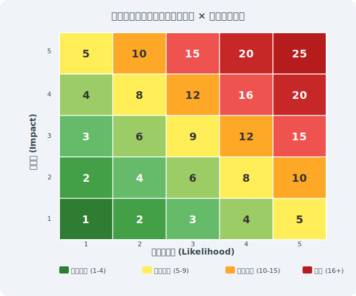
ISMS完全ガイド | ISO/IEC 27001:2022
リスク対応の4つの選択肢
リスクアセスメント結果に基づき、各リスクへの対処方法を選択する
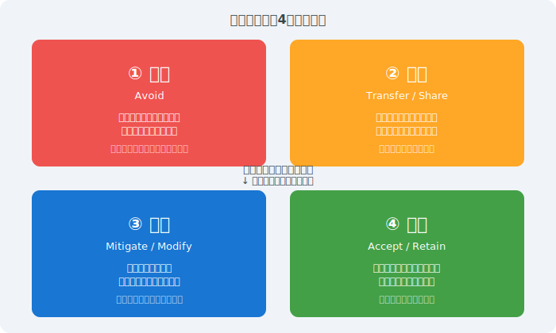
ISMS完全ガイド | ISO/IEC 27001:2022
適用宣言書（Statement of Applicability / SoA）
SoAとは:
Annex A全93管理策について、適用の有無・理由・実施状況を記載した文書
必須記載事項:
① 適用/除外の判断、② 選択根拠（リスク対応・法要件・契約等）、③ 実施状況
除外管理策:
正当な理由が必要（例：物理的施設なし → 7.x の一部除外が可能）
SoAの作成タイミング:
リスクアセスメント・対応計画策定後に作成。認証審査の中心文書
2022年対応:
旧114項目から93項目へのマッピング表を作成し移行する
審査員の確認ポイント:
除外の論理的根拠・リスク対応計画との一致・実際の実施状況との整合
ISMS完全ガイド | ISO/IEC 27001:2022
リスクレジスターの実例
資産
脅威
脆弱性
影響
可能性
スコア
対応
残留
顧客DBサーバ
不正ログイン
弱いパスワード
5
4
20
MFA導入(8.5)
8
業務PC
ランサムウェア
未パッチOS
4
4
16
パッチ管理(8.8)
6
メールシステム
フィッシング
教育不足
4
3
12
教育訓練(6.3)
6
リスクレジスターは
資産台帳・脅威分析・対応計画・SoAを接続する中核文書
として維持
ISMS完全ガイド | ISO/IEC 27001:2022
第4章 主要管理策の詳細
Annex A — 93の管理策を4カテゴリで詳解
ISMS完全ガイド | ISO/IEC 27001:2022
Annex A 管理策の4カテゴリ（2022年版）
第5節 組織的管理策（37項目）:
5.1〜5.37 — 方針・役割・資産管理・サプライヤー・インシデント・法令
第6節 人的管理策（8項目）:
6.1〜6.8 — 採用・教育・秘密保持・テレワーク・退職時処理
第7節 物理的管理策（14項目）:
7.1〜7.14 — 施設セキュリティ・クリアデスク・機器廃棄
第8節 技術的管理策（34項目）:
8.1〜8.34 — アクセス管理・暗号化・ネットワーク・ログ
2013年版との比較:
14ドメイン・114管理策 → 4カテゴリ・93管理策（統廃合＋11新規追加）
属性（Attributes）の活用:
管理策タイプ（予防・検知・是正）等でフィルタリング可能
ISMS完全ガイド | ISO/IEC 27001:2022
組織的管理策（Annex A 5） — 主要項目
5.1
情報セキュリティのための方針群 — 方針の策定・承認・伝達・レビューサイクル
5.7
脅威インテリジェンス（新規）— 脅威情報の収集・分析・組織内共有の仕組み
5.15〜5.18
アクセス制御 — ニーズトゥノウ原則・最小特権・アクセスレビュー
5.19〜5.22
サプライヤー関係 — セキュリティ要件の契約明記・定期的な監視と評価
5.23
クラウドサービスのセキュリティ（新規）— クラウド利用ポリシー・プロバイダ評価
5.24〜5.28
インシデント管理 — 検知・対応・学習・証拠保全のプロセス整備
ISMS完全ガイド | ISO/IEC 27001:2022
人的管理策（Annex A 6） — 主要項目
6.1
選考（スクリーニング）— 採用前の身元確認・経歴確認（役割に応じた深度）
6.2
雇用条件 — 守秘義務・セキュリティ義務を雇用契約・就業規則に明記
6.3
情報セキュリティの認識・教育・訓練 — 全従業員対象の定期教育・役割別訓練
6.4
懲戒手続き — セキュリティポリシー違反への対応手順を明文化
6.5
雇用の終了または変更後の責任 — 退職・異動時のアクセス権即時無効化
6.8
情報セキュリティ事象の報告 — 従業員が疑わしい事象を容易に報告できる仕組み
ISMS完全ガイド | ISO/IEC 27001:2022
物理的管理策（Annex A 7） — 主要項目
7.1
物理的セキュリティ境界 — サーバ室・機密区域への多層的な入退室管理
7.2
物理的エントリ — ICカード・生体認証・訪問者管理台帳・同行ルール
7.4
物理的セキュリティ監視（新規）— 監視カメラ・警備システムの導入・録画保管
7.7
クリアデスク・クリアスクリーン方針 — 離席時のPC施錠・書類の保管
7.8〜7.12
機器の管理 — 廃棄時のデータ消去・持ち出し承認・ケーブル管理
7.14
機器の安全な廃棄 — HDDの物理破壊またはDoD準拠の消去、証跡の保管
ISMS完全ガイド | ISO/IEC 27001:2022
技術的管理策（Annex A 8） — 全体概観
アクセス管理（8.2〜8.6）:
特権アクセス・認証・最小権限・情報アクセス制限
マルウェア対策・変更管理（8.7〜8.9）:
エンドポイント保護・ソフトウェアインストール制限・構成管理
データ管理（8.10〜8.13）:
情報の削除・データマスキング・DLP・バックアップ
ログと監視（8.15〜8.17）:
監査ログ・監視活動・クロック同期
ネットワーク・暗号化（8.20〜8.24）:
通信の保護・Webフィルタリング・暗号アルゴリズム
開発・運用（8.25〜8.34）:
セキュアな開発・テスト・脆弱性管理・ペネトレーションテスト
ISMS完全ガイド | ISO/IEC 27001:2022
アクセス管理と認証（Annex A 8.2〜8.6）
8.2 特権アクセス権の管理:
管理者アカウントの払い出し基準・定期的なレビュー・Just-in-Time権限
8.3 情報アクセス制限:
ロールベースアクセス制御（RBAC）・ニーズトゥノウ原則の徹底
8.5 セキュアな認証:
多要素認証（MFA）の実装 — パスワードポリシー（長さ・複雑さ・有効期限）
8.6 容量・能力の管理:
システムリソースの監視・ピーク時のキャパシティ確保
特権アクセス管理（PAM）ツール:
特権IDの一元管理・セッション録画・自動払い出し
審査のポイント:
アクセス権の定期棚卸し記録（半年〜1年に1回以上）・退職者の即時無効化証跡
ISMS完全ガイド | ISO/IEC 27001:2022
暗号化とデータ保護（Annex A 8.24）
8.24 暗号の使用:
暗号アルゴリズムポリシー — 禁止アルゴリズム（MD5・SHA-1・DES等）の明文化
推奨アルゴリズム:
対称 AES-256、非対称 RSA-2048以上/ECDSA-P256以上、ハッシュ SHA-256以上
鍵管理:
鍵の生成・配布・保管・ローテーション・廃棄サイクルの文書化
TLS 1.2以上の強制:
HTTPSの導入・古いプロトコル（TLS 1.0/1.1）の無効化
保存データの暗号化:
DBの暗号化・フルディスク暗号化（Bitlocker/FileVault等）
法的要件との調整:
一部国では強暗号の輸出規制あり（海外展開時に要確認）
ISMS完全ガイド | ISO/IEC 27001:2022
サプライヤー管理（Annex A 5.19〜5.22）
委託先・クラウドプロバイダへの情報セキュリティ要件の伝達・管理が必須
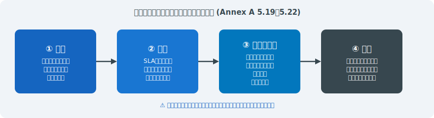
ISMS完全ガイド | ISO/IEC 27001:2022
インシデント管理プロセス（Annex A 5.24〜5.28）
検知から学習まで一貫したプロセスで対応し、継続的改善につなげる
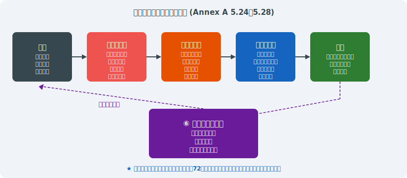
ISMS完全ガイド | ISO/IEC 27001:2022
第5章 認証審査の実践ポイント
Stage 1・Stage 2・サーベイランス・更新審査の実務
ISMS完全ガイド | ISO/IEC 27001:2022
ISMS認証審査プロセスの全体像
ギャップ分析から認証後のサーベイランスまで、3年サイクルで継続的に維持する
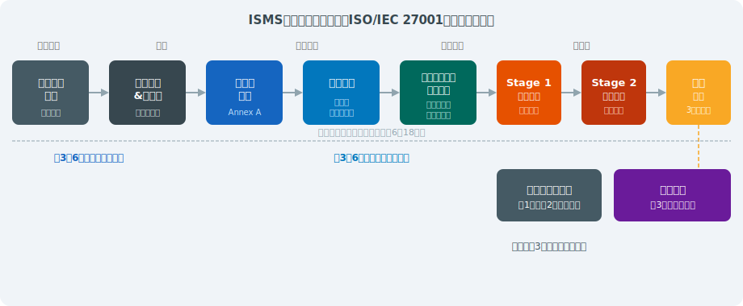
ISMS完全ガイド | ISO/IEC 27001:2022
Stage 1 審査（文書審査）— 重点確認事項
目的:
ISMSの設計が適切で Stage 2 審査に進める準備ができているかを確認
スコープ文書:
組織の境界・除外範囲・根拠が明確に記載されているか
リスクアセスメント記録:
方法論の一貫性・全スコープ資産のカバレッジ
SoA（適用宣言書）:
全93管理策の適用/除外の記録・除外理由の論理的妥当性
内部監査結果・MR記録:
少なくとも1サイクル実施済みであること
よくある指摘:
スコープが曖昧・SoAとリスク対応計画の不整合・MR未実施
ISMS完全ガイド | ISO/IEC 27001:2022
Stage 2 審査（現地審査）— 重点確認事項
目的:
管理策が文書通りに実施され、有効に機能しているかを証拠で確認
インタビュー技法:
「どうやっていますか？」→「見せてもらえますか？」→「記録はありますか？」
サンプリング:
全件審査は不可能。リスクの高い領域を重点的に、かつ無作為にも抽出
確認すべき証跡（例）:
アクセスログ・パッチ適用履歴・教育訓練記録・インシデント報告書
インタビュー対象:
管理責任者・IT担当者・一般従業員（方針の認識確認）・経営層
不適合の種類:
Major（要求事項の重大な不満足）/ Minor（軽微な不適合）/ 観察事項
ISMS完全ガイド | ISO/IEC 27001:2022
よくある不適合① — リスクマネジメント
不適合例1:
リスクアセスメントの方法論が文書化されておらず、再現性がない
不適合例2:
スコープ内の一部資産（クラウドサービス・テレワーク端末）がリスク評価から漏れている
不適合例3:
SoAに記載した管理策とリスク対応計画の対応関係が不明確
不適合例4:
リスク受容基準が定量的に定義されておらず、受容の判断が恣意的
不適合例5:
リスクアセスメントが年1回実施されていない（または重大変更後の再評価なし）
是正のポイント:
方法論の文書化 → 資産台帳の完全性確認 → SoAとのリンク確認
ISMS完全ガイド | ISO/IEC 27001:2022
よくある不適合② — 管理策の実施
不適合例1:
SoAに「実施済み」と記載しているが、実際の運用証跡が存在しない（形骸化）
不適合例2:
アクセス権の定期棚卸しが実施されていない、または記録が残っていない
不適合例3:
退職者のアカウントが認証日時点で有効のまま残存している
不適合例4:
パッチ適用が1年以上遅延しているシステムが本番稼働中
不適合例5:
暗号化ポリシーで禁止しているTLS 1.0が本番環境でまだ有効
是正のポイント:
文書と実態の一致の確認 → 定期的な設定確認ツールの導入
ISMS完全ガイド | ISO/IEC 27001:2022
よくある不適合③ — 教育・文書管理
不適合例1:
情報セキュリティ教育を受けていない従業員が多数存在（記録確認で判明）
不適合例2:
方針・手順書の最終改訂が3年以上前で内容が現状と乖離している
不適合例3:
同一名称の手順書の旧バージョンが現場で使用されている（版管理の失敗）
不適合例4:
委託先との秘密保持契約や情報セキュリティ要件が契約書に含まれていない
不適合例5:
インシデント対応手順書は存在するが、担当者がその内容を知らない
是正のポイント:
教育記録の体系的管理 → 文書の定期レビューサイクルの確立
ISMS完全ガイド | ISO/IEC 27001:2022
審査証跡の効果的な収集技術
TTTF（Talk, Trace, Test, Verify）アプローチ:
インタビュー→文書追跡→実証テスト→相互確認
証跡の三角測量:
複数の異なる種類の証跡（文書・記録・インタビュー）で同一事実を確認
スクリーンショット vs ログファイル:
審査員が直接確認できるものを優先、加工のないローデータ
時系列の重要性:
インシデント記録・変更管理・レビュー記録は日付の連続性を確認
統計的サンプリング:
大量の記録は無作為抽出で信頼性確保（ISO 19011の原則）
デジタルフォレンジック的アプローチ:
「何かあったはずの記録がない」も重要な発見事項
ISMS完全ガイド | ISO/IEC 27001:2022
リモート審査の実施（IAF MD 4 準拠）
IAF MD 4:
リモート審査の実施基準（2022年改訂）— ハイブリッド審査が標準化
技術要件:
高品質ビデオ会議・画面共有・電子文書のリアルタイム共有環境
効果的な用途:
文書審査（Stage 1）・文書記録の確認・非現地スタッフのインタビュー
現地審査が必要な場面:
物理的管理策の確認（サーバ室・入退室）・機器の実物確認
リモート審査の制限:
サプリングの深度・ランダム性が低下するリスクへの対処
注意点:
被審査組織のIT環境の脆弱性情報を共有するセキュリティへの配慮
ISMS完全ガイド | ISO/IEC 27001:2022
サーベイランス審査と更新審査
サーベイランス審査:
第1年・第2年に年1回実施（約1〜2日間）— 継続的適合性を確認
サーベイランスの重点:
前回審査からの変更点・不適合の是正処置・改善目標の進捗
更新審査（再認証審査）:
第3年に実施（約3〜4日間）— 3年間の改善実績を総合評価
更新審査の特徴:
9.2内部監査・9.3MRの3年分の記録確認・スコープ変更の確認
認証維持のための実務:
毎年の内部監査・MR・是正処置の記録を着実に蓄積
是正処置の期限:
Major不適合は通常30日以内・Minor不適合は90日以内に是正完了
ISMS完全ガイド | ISO/IEC 27001:2022
第6章 実際の導入事例
IT企業・製造業・金融機関・医療機関の4事例
ISMS完全ガイド | ISO/IEC 27001:2022
事例1：IT企業（300名）— プロジェクトタイムライン
背景:
大手金融機関からの委託開発案件獲得のためISMS認証が入札要件に
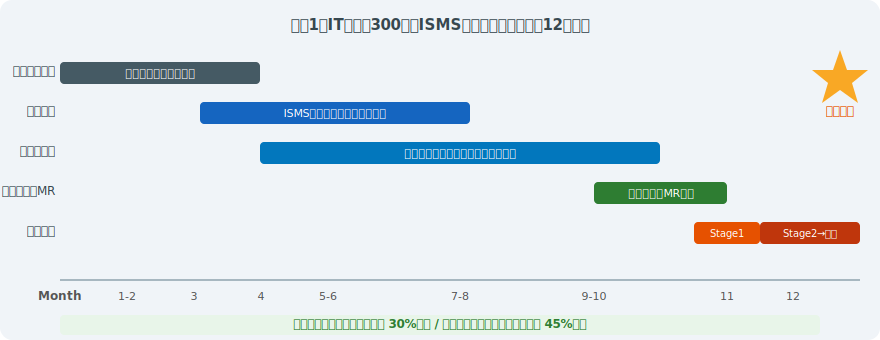
ISMS完全ガイド | ISO/IEC 27001:2022
事例1：IT企業 — 課題と対策の詳細
主な課題①:
開発・運用・管理の部門間でセキュリティ認識に大きな差がある
対策:
部門横断ISMS推進チーム設置・部門代表者が参加する月次レビュー会議
主な課題②:
クラウドサービス（AWS・Azure・SaaS）をスコープに含める方法が不明
対策:
共有責任モデルの整理・CSP（クラウドサービスプロバイダ）ごとのセキュリティ評価
主な課題③:
認証後も継続的に維持できるか（担当者依存のリスク）
対策:
手順書の整備・後任担当者の育成・外部コンサルタントとの顧問契約
ISMS完全ガイド | ISO/IEC 27001:2022
事例2：製造業（OT/ITセキュリティ統合）
背景:
工場ネットワークへのランサムウェア被害（2023年）を受け、IT・OT統合ISMSを構築
スコープ:
本社IT環境 + 主力工場の製造システム（OT/SCADA）を同一スコープに
主な対応策①:
IT/OTネットワーク間のファイアウォール強化・データダイオード導入
主な対応策②:
OT専用の脆弱性管理プロセス（パッチ適用は計画停止時に限定）
主な対応策③:
サプライヤーへのセキュリティ要件通知・部品調達先のリスク評価
成果:
工場ネットワーク分離により被害範囲を最小化・ISM認証で取引先の信頼回復
ISMS完全ガイド | ISO/IEC 27001:2022
事例3：金融機関（規制対応とISMSの統合）
背景:
金融庁のサイバーセキュリティ管理態勢向上要請・FISC安全対策基準への対応
アプローチ:
ISMS・FISC基準・PCI DSS要件を単一の管理策フレームワークに統合
コントロールマッピング:
ISO 27001 Annex A
FISC基準
PCI DSS v4.0 の対応表作成
効果①:
複数の外部審査（ISO認証・PCI DSS QSA審査・金融庁考査）の準備コスト削減
効果②:
統合内部監査プログラムにより、監査工数を35%削減
教訓:
統合フレームワーク構築には相応の初期工数が必要 — コンサルタントの活用が有効
ISMS完全ガイド | ISO/IEC 27001:2022
事例4：医療機関（個人情報保護とISMS）
背景:
電子カルテへの不正アクセス事案発生・厚生労働省ガイドラインへの対応強化
スコープ:
電子カルテシステム・医療情報システム・院内ネットワーク
ISO/IEC 27701（PIMS）との統合:
ISMSにプライバシー拡張を追加し、個人情報保護法・GDPRへも対応
重点管理策:
医師・看護師等のロールベースアクセス制御・二次利用目的の制限・保管期限管理
インシデント対応:
個人情報漏えいは個人情報保護委員会への72時間以内の速報義務
成果:
患者データアクセスログの100%取得・不審アクセスの検知時間が30分以内に短縮
ISMS完全ガイド | ISO/IEC 27001:2022
失敗事例：ISMS形骸化のパターンと教訓
失敗パターン①「認証取得が目的化」:
認証後に運用が止まり、翌年のサーベイランスでMajor不適合が多発
失敗パターン②「IT部門だけの取組み」:
他部門が方針を知らず、教育・インシデント報告が機能しない
失敗パターン③「文書は整備、運用なし」:
手順書は存在するが誰も読まず実際の作業は慣例で行われる
失敗パターン④「リスクアセスメントのコピー流用」:
毎年同じリスク評価書をそのまま更新なしで提出
共通の根本原因:
トップマネジメントのコミットメント不足・担当者個人に依存した推進体制
予防策:
定期的なMR・経営KPIへのISMS指標組み込み・全部門へのISMS役割の明確化
ISMS完全ガイド | ISO/IEC 27001:2022
成功要因の分析 — 5つの鍵
事例分析から導出した、ISMS持続的成功のための共通要因
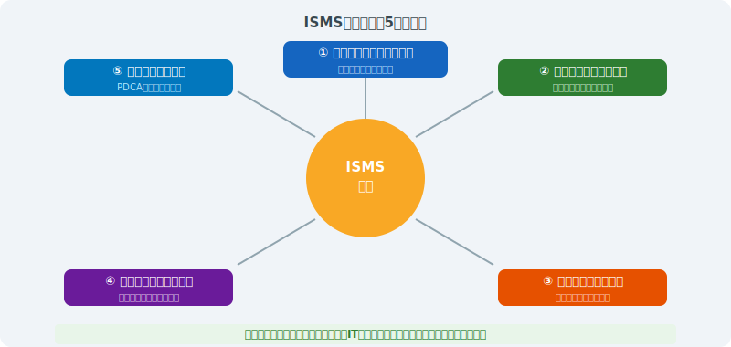
ISMS完全ガイド | ISO/IEC 27001:2022
第7章 ISO/IEC 27001:2022 改訂ポイント
2013年版との差分と移行対応の実務
ISMS完全ガイド | ISO/IEC 27001:2022
2022年改訂の背景と主要変更点
改訂背景:
クラウド化・AI活用・サプライチェーンリスク・テレワーク普及等の環境変化に対応
箇条4〜10:
軽微な修正のみ（HLS構造は維持）— 箇条6.3「変更の計画策定」が新設
Annex Aの大幅改訂:
114管理策（14ドメイン）→
93管理策（4カテゴリ）
新規追加:
11の新規管理策（主にクラウド・AI・データ管理・監視系）
統廃合:
複数の管理策を統合・整理（削除された管理策はゼロ — すべて何らかの形で存続）
「属性（Attributes）」:
各管理策に5種類の属性タグを付与し、多軸での分析が可能
ISMS完全ガイド | ISO/IEC 27001:2022
管理策の大幅再編 — 2013年版と2022年版の比較
11の新規管理策が追加され、組織・人・物理・技術の4カテゴリに再編された
ISMS完全ガイド | ISO/IEC 27001:2022
2013年版から統廃合された主要管理策
A.6.1.2 職務の分離（→8.2に統合）:
アクセス制御セクションへ移行・内容は継続
A.11 物理的・環境的セキュリティ（114→7）:
15項目から14項目へ。内容は整理統合
A.12 運用のセキュリティ（→8）:
技術的管理策として大幅に統合・再編
A.14 システムの取得・開発・保守（→8.25〜8.34）:
セキュアな開発ライフサイクルとして整理
A.15 サプライヤー関係（→5.19〜5.22）:
組織的管理策に移動・クラウドサービス（5.23）を分離
マッピングシート:
ISO/IEC 27002:2022 にAnnex B（2013→2022対応表）あり — 移行に必須
ISMS完全ガイド | ISO/IEC 27001:2022
2013年版認証からの移行手順
Step 1
ギャップ分析 — 新規11管理策に対する現在の対応状況を評価（SoAの更新）
Step 2
SoA更新 — 93管理策ベースのSoAを新規作成（旧114管理策からのマッピング）
Step 3
管理策の実装・改善 — 特に新規11管理策への対応（脅威インテリジェンス・クラウド管理等）
Step 4
内部監査 — 2022年版要件への適合性を確認
Step 5
マネジメントレビュー — 移行計画の進捗・残課題を経営層が承認
Step 6
移行審査 — 認証機関と協議の上、通常のサーベイランス・更新審査と合わせて実施
ISMS完全ガイド | ISO/IEC 27001:2022
移行対応チェックリスト（実務用）
文書関連:
□ SoA更新（93管理策版）/ □ リスクアセスメント方法論の見直し / □ 情報セキュリティ方針の更新
新規管理策の実装確認:
□ 5.7脅威インテリジェンス（仕組みの有無）/ □ 5.23クラウドセキュリティポリシー
新規管理策の実装確認:
□ 8.9構成管理台帳 / □ 8.10データ削除手順 / □ 8.12 DLPツール評価
新規管理策の実装確認:
□ 8.16監視活動のSIEM等ツール導入 / □ 8.28セキュアコーディング基準
内部監査:
□ 2022年版チェックリストへの更新 / □ 全スコープの再評価完了
認証機関との調整:
□ 移行審査日程の確認 / □
期限: 2025年10月31日
までに移行完了
ISMS完全ガイド | ISO/IEC 27001:2022
第8章 関連規制・標準との連携
GDPR・個人情報保護法・SOC 2・NISC基準との関係
ISMS完全ガイド | ISO/IEC 27001:2022
GDPR・個人情報保護法との関係
ISMSはセキュリティの枠組みを提供し、プライバシー法規制への技術的・組織的対策を支援する
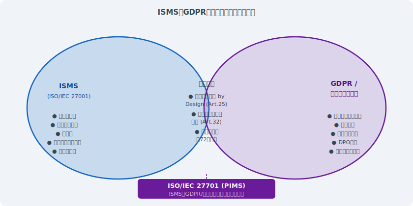
ISMS完全ガイド | ISO/IEC 27001:2022
SOC 2・PCI DSS・NISC基準との比較
SOC 2（AICPA）:
サービス組織向け。Trust Service Criteria（セキュリティ等5軸）。TypeⅡは6〜12ヶ月の運用確認
PCI DSS v4.0:
カード会員データを扱う組織向け。12要件・300以上のサブ要件。ISMSとの高い親和性
NISC重要インフラ基準:
日本の重要インフラ14分野に適用。ISMSを基盤として追加要件を充足
NIST CSF 2.0:
米国発のサイバーセキュリティフレームワーク。Govern・Identify・Protect・Detect・Respond・Recover
ISMSとの関係:
ISMSは要求事項規格（What）。他標準はベストプラクティス（How）を提供
実務上の活用:
コントロールマッピングにより1つの実施を複数フレームワークへ対応付け可能
ISMS完全ガイド | ISO/IEC 27001:2022
業界別セキュリティ基準とISMSの整合
金融:
FISC安全対策基準・金融庁サイバーセキュリティガイドライン（ISMSが基礎）
医療:
厚生労働省「医療情報システムの安全管理に関するガイドライン」第6版（ISMS準拠を推奨）
製造・重要インフラ:
IEC 62443（OTセキュリティ）+ ISO 27001でIT/OT統合セキュリティ
政府・防衛調達:
CMMC（米国）・NIST SP 800-171 — ISMSとマッピング可能な多くの要件
クラウドサービス事業者:
ISO/IEC 27017・27018・CSA STAR認証（ISMSの上位互換として認定）
ISMSの汎用性:
業界固有の要件は追加管理策として取り込み、ISMSを核とした統合運用が理想
ISMS完全ガイド | ISO/IEC 27001:2022
第9章 AI・クラウド時代のISMS
新技術がもたらすリスクとISMSによる対応
ISMS完全ガイド | ISO/IEC 27001:2022
クラウドサービスとISMS
共有責任モデル:
IaaS/PaaS/SaaS で責任分担が異なる — ISMSスコープ設定に影響
ISO/IEC 27017:
クラウドサービス固有の追加管理策（CSP・クラウドサービス顧客双方向け）
ISO/IEC 27018:
クラウドでの個人情報（PII）処理に特化した実施指針
SaaS利用時の注意点（5.23）:
データ所在・エンドポイント管理・ログ取得可否・退会時のデータ消去
マルチクラウド環境:
複数CSPを利用する場合の一元的なアクセス管理・暗号鍵管理の課題
CSPの認証確認:
ISO 27001・SOC 2 TypeⅡ・CSA STARレポートを入手し委託先管理（5.19）に活用
ISMS完全ガイド | ISO/IEC 27001:2022
AIリスクとISMS — ISO/IEC 42001との関係
ISO/IEC 42001:2023（AIMS）:
AI管理システム規格 — ISMSと同じHLSで統合実施が可能
AIシステム固有のリスク:
モデルへの敵対的攻撃・データポイズニング・プロンプトインジェクション
学習データの保護:
個人情報・機密情報を含む学習データへのアクセス制御（8.3）
AIの出力監視（8.16応用）:
異常な出力・差別的な結果・機密情報の漏えいを検知
生成AIの業務利用リスク:
機密情報の入力禁止ポリシー（5.1）・ログ保全・利用者教育（6.3）
今後の方向性:
NIST AI RMF・EU AI Act との整合 — AIガバナンスフレームワークとの統合
ISMS完全ガイド | ISO/IEC 27001:2022
ゼロトラストアーキテクチャとISMS管理策の対応
「すべてを信頼しない」原則をISMSの管理策と組み合わせて実装する
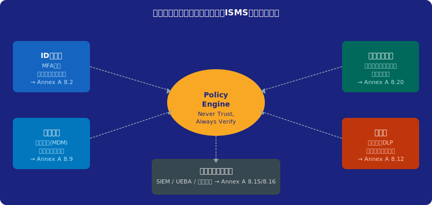
ISMS完全ガイド | ISO/IEC 27001:2022
まとめ — ISMSの価値と将来展望
業務価値:
サイバーリスクの可視化・定量化による合理的な投資判断と経営への説明責任
市場価値:
国内ISMS認証件数は約7,000件（2025年末）— 調達条件・入札要件として定着
法的・規制的価値:
個人情報保護法・重要インフラ基準等への対応基盤として機能
将来展望①:
AI・IoT・OTセキュリティへのISMS拡張（ISO/IEC 42001・IEC 62443との統合）
将来展望②:
自動化・継続的監視によるContinuous Complianceへの進化
将来展望③:
ESGの観点からの情報セキュリティガバナンス — 非財務情報開示との連動
ISMS完全ガイド | ISO/IEC 27001:2022
審査員・コンサルタントへの提言
審査員として:
「形式適合」より「実質的な有効性」を重視した審査アプローチを貫く
コンサルタントとして:
認証取得だけでなく「持続的に機能するISMS」の構築を支援する
共通の責務:
被審査組織のリスク文化醸成に貢献 — 形骸化を生まない処方箋を提供
継続的学習:
NISC・IPA・JPCERT/CCの情報を定期的に収集・ISMSへの反映を支援
倫理的責任:
審査で得た組織の機密情報・脆弱性情報の厳格な守秘義務
コミュニティへの貢献:
審査・コンサルの知見を業界全体で共有し、日本全体のセキュリティレベルを向上
ISMS完全ガイド | ISO/IEC 27001:2022
参考資料・参考文献
規格・標準:
ISO/IEC 27001:2022
/
ISO/IEC 27002:2022
/ ISO/IEC 27005:2022
移行関連:
IAF MD 26:2023 ISO/IEC 27001移行要件
国内ガイダンス:
IPA「情報セキュリティマネジメント」
/
NISC重要インフラ行動計画
認証統計:
ISMS-AC 国内ISMS認証件数推移
/
ISO Survey
参考文献:
「ISO 27001:2022 実践ガイド」/ 「情報セキュリティ管理の教科書」/ JNSA各種ガイドライン
脅威情報:
JPCERT/CC
/
IPA 情報セキュリティ10大脅威